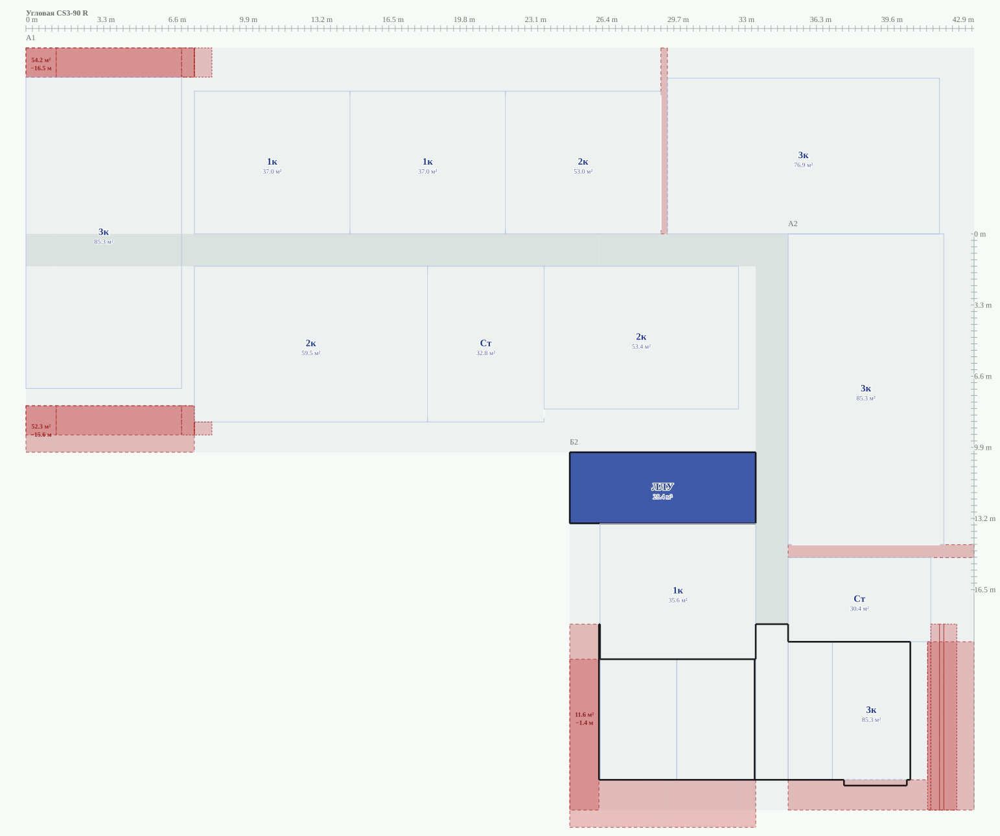

Планировщик жилых секций
Из чертежа — в проверяемую схему секции
Квартирник подбирает и размещает квартиры, сохраняет коридоры и ЛЛУ и показывает места, которые должен проверить специалист.
Сейчас
Объединяю готовые части программы
Основные части программы уже работают по отдельности. Сейчас проверяю их вместе на одном реальном проекте: от исходного чертежа до готовой схемы.
{kind=link}

- 1Квартиры размещены
- 2ЛЛУ и коридор сохранены
- 3Есть ручная проверка
Последнее изменение
Объединяем данные из исходного чертежа
Собираем единый набор данных: план, подбор квартир, коридоры и ЛЛУ. После объединения проверяем целостность и готовим схему для финальной проверки специалистом.
Открыть полную историю работы →Проверяемый кейс
Что именно подтверждает CS3-90
Источники чисел страницы: overview проекта, manifest проверяемого запуска CS3-90 и журнал публикации. Время, число вариантов, версия и hash входа доступны рядом с результатом.
- Сценарий
- CS3-90 · Угловая секция, поворот 90°
- Исходные требования
- Обязательно разместить одну однокомнатную, одну двухкомнатную и одну трёхкомнатную квартиру.
- Результат
- 12 квартир · 748 м² · потеряно обязательных: 0
- Предупреждения
- 3 предупреждения · нарушений: 2
3 из 3 машинных проверок пройдено
Специалист проверяет свободные зоны, нормативы и соответствие реальному чертежу.
Свежесть доказательства: устарело относительно версии приложения
Показать протокол проверяемого запуска
- Доля площади квартир
- Доля площади квартир: 64,82% (округлено до 65%) = 748,22 м² квартир / 1 154,25 м² всей секции × 100
- Источник результата
- запись проверки CS3-90
- Результат сформирован
- 29 июля 2026 г. в 10:12
- Свежесть результата
- устарело относительно версии приложения
- Исходник портала
- publication-20260820085141
- Портал собран
- 20 августа 2026 г. в 11:51
- Портал опубликован
- 20 августа 2026 г. в 11:51
- Режим портала
- публикационная сборка
- Версия приложения
- publication-20260820085141
- Проверка приложения
- подтверждённого результата проверки нет
- Приложение проверено
- нет данных
- Версия расчёта
- undisclosed
- Возраст доказательства
- 22 дня
- Расстояние между версиями
- нет данных
- Hash исходных данных
41a3c2f7bdbc- Запуск сформирован
- 29 июля 2026 г. в 10:12
- Время расчёта
- 1,45 с
- Рассмотрено вариантов
- 384
- Формула доли площади квартир
- 748,22 м² квартир / 1 154,25 м² всей секции × 100
Состав: 3 предупреждения
Желательные типы квартир не помещаются на выбранной стороне без переполнения.- Не помещается без переполнения выбранной стороны.Желательное требование: 4-комн. не помещается без переполнения выбранной стороны.
- Не помещается без переполнения выбранной стороны.Желательное требование: 4-комн. не помещается без переполнения выбранной стороны.
- Не помещается без переполнения выбранной стороны.Желательное требование: 4-комн. не помещается без переполнения выбранной стороны.
Площадь: 2 нарушения
Для указанных типов не нашлось размещённой квартиры в заданном диапазоне площади.- Нет размещённой квартиры в заданном диапазоне площади.1-комн.: нет поставленной квартиры в заданном диапазоне площади.
- Нет размещённой квартиры в заданном диапазоне площади.3-комн.: нет поставленной квартиры в заданном диапазоне площади.
- Нормативы: не проверялись
- Геометрия: 0 критических нарушений
Граница продукта
Что уже можно смотреть и что пока нельзя обещать
Портал показывает инженерный прогресс, а не готовность к запуску. Поэтому ограничения названы рядом с результатом.
Уже делает
- строит схему CS3-90 по сохранённым требованиям;
- размещает обязательные квартиры;
- показывает предупреждения для ручной проверки.
Пока не делает
- не доказывает нормативную пригодность без специалиста;
- не заменяет проверку результата на реальном чертеже;
- не подтверждает все реальные типы секций.
Дальше
Три ближайшие вехи
Полные зависимости и критерии остаются на странице статуса, здесь только ближайший маршрут.
Декабрь 2026Прототип расчёта и схемы на подготовленных данных
Февраль 2027Начинаются проверки с коллегами
Июнь 2027Запуск рабочей версии
Свежие данные ещё загружаются. Пока показана последняя сохранённая версия.